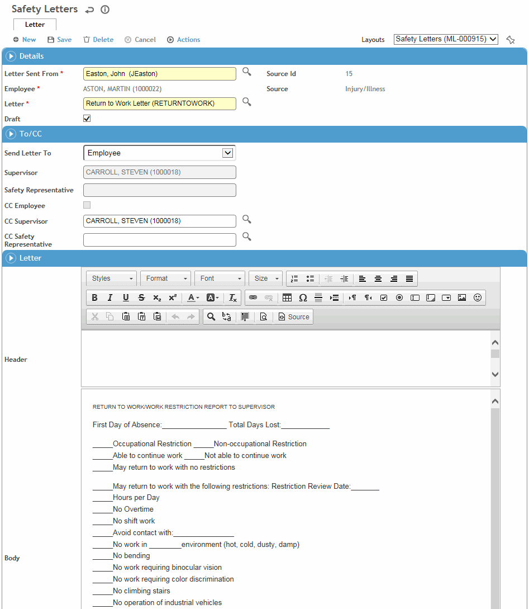

Letter content is defined in the LettersTemplate look-up table. When you choose a letter to send, this content is automatically inserted (but you can change it for the letter you are creating).
Before saving a letter, you can edit any part. However, once a letter has been saved, you cannot edit it unless it has been marked “Draft”. A non-draft letter is read-only, but you can still email it or export it to PDF or HTML.
A medical letter can be password protected and the password sent to the employee via text message. This requires the following:
- Password Protected checkbox added to a custom letter layout
- Business Rule BR-100637 enabled
- Employee's cell phone is provided in their Demographics record.
When these are set up, the letter will be sent as a PDF email attachment and a text will be sent with the password.
To generate a letter:
If you are in a module record and want to send a letter relating to that record, click New on the Letters tab.
Alternatively, click Letters in any of the Cloud menus (“Communications” in the Environmental menu) and then click New. (You cannot add a letter to an IH monitoring or noise sample until it has been approved.)
To copy an existing letter, select the letter and choose Actions»Copy. For more information, see Working with Letters.

In the top Details section:
Select the user who is sending the letter.
If you started from a module record, the employee and supervisor names are populated. Otherwise, select the employee whom the letter is about.
Select the form letter you want.
The Draft checkbox is selected by default on creation of a new letter so that you can modify the letter after saving it. Draft letters can be updated and exported (to PDF or HTML), or deleted (if you have appropriate privileges), but not emailed. PDF and HTML output will include the word “Draft” in the top-right corner.
In the To/CC section, select the main recipient (e.g. employee, supervisor); other options are available depending on the module (e.g. practitioner, safety representative, case contact, IH user). If you choose supervisor or practitioner, select the appropriate user. Also identify who should receive a copy of this letter; those cc’d will be listed in the footer section of the letter.
For medical letters, if you change the recipient after adding content (header, body, or footer), the content remains.
In the bottom Details section, edit the content or formatting of the letter if necessary.
The content is populated from various Cority records according to the variables defined in the Letter Template. For example, if a template includes “<<FromFullAddress>>”, when the letter is generated, this is replaced with the full address of the user who is sending the letter.
The formatting options are similar to those in Microsoft Word.
Click Save.
To save a PDF version of this letter to print later, choose Actions»Export Letter to PDF. When the PDF opens, choose the print or save function as required.
To send a letter via email (non-draft letters only), choose Actions»Email. Change any of the message fields as required.
To save the letter in HTML format, choose Actions»Export Letter to HTML. The letter opens in a new browser window, where you can save it. Any HTML/CSS/Javascript that you included is “sanitized” to remove any potentially harmful code to protect against cross-site scripting (XSS).